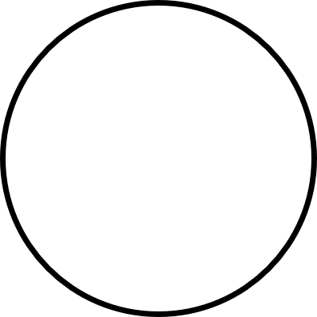
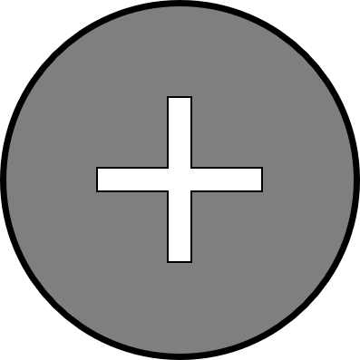
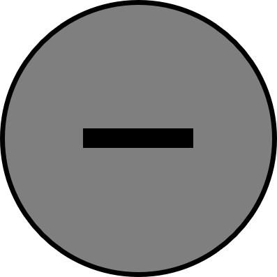
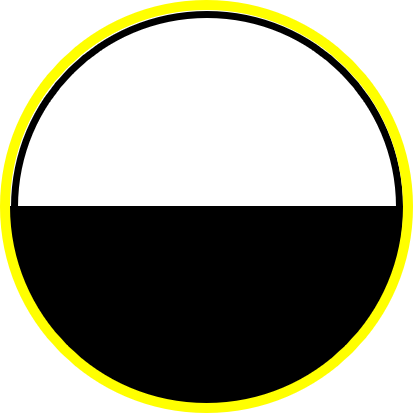
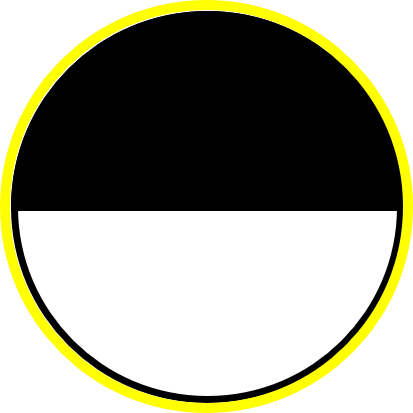

～ルール～
勝利条件
盤面がすべて埋まる、もしくは両者駒がおけなくなったら修了し、最後に測定を行います
測定時、灰色の駒は50%の確率で白か黒に確定し、最終的に駒数の多いほうが勝利となります
駒の種類
White: 測定すると100%白になる状態。白の持ち駒
Black : 測定すると100%黒になる状態。黒の持ち駒
: 測定すると100%黒になる状態。黒の持ち駒
Gray(+): 測定すると50%の確率で白、50%の確率で黒になる状態。白の持ち駒
Gray(-): 測定すると50%の確率で白、50%の確率で黒になる状態。黒の持ち駒
駒を置いた時の効果
Xゲート：
白 / 黒を置いて自分の駒と挟んだ時に発動する
挟んだ駒の、白と黒を反転させる
↔
Hゲート：
Gray(+) / Gray(-)を置いて自分の駒と挟んだ時に発動する
挟んだ駒に対して以下効果を与える
→
→
→
→
Yゲート：
白 / 黒を置いて自分の駒と挟んだ時に発動する
挟んだ駒に対して以下効果を与える
→
→
→
→
Zゲート：
Gray(+) / Gray(-)を置いて、自分の駒と挟んだ時に発動する
挟んだ駒の、Gray(+)とGray(-)を反転させる
↔
CNOT(Controlled NOT gate)：
ゲーム中、ターンを消費して一度だけ使える
隣接する２つの駒を選択する。相手の駒を選択すると、隣接する駒にXゲートを作用させることができる
また、灰色の駒を制御駒として選択すると、以下のルールに従って駒が反転する
| 制御駒 | 作用駒 | → | 結果 |
|---|---|---|---|
| → | |||
| → | |||
| → | |||
| → | |||
| 相手駒 | → |  | |
| 自分駒 | → | ||
| 相手駒 | → | ||
| 自分駒 | → |
または の状態は、ここではエンタングルメントという状態を表している。量子コンピュータにおける特殊な状態で、
この状態になっている駒は、それぞれの駒の状態が互いに依存している。
例えば、 の状態は、白か黒は50%の確率であるが、片方を観測して白だった場合、もう片方は必ず白になる。 逆に、 の状態は、白か黒は50%の確率であるが、片方を観測して白だった場合、もう片方は必ず黒になる。
SWAP：
隣接する二つの駒を入れ替える
ゲーム中、ターンを消費して一度だけ使える